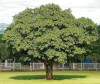
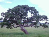
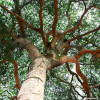
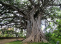

Oiti
Licania tomentosa
Árvore nativa do Brasil, muito usada na arborização urbana por sua sombra e resistência.

Pequi
Caryocar brasiliense
Árvore típica do Cerrado, famosa pelo fruto de sabor marcante e muito utilizado na culinária.

Jatobá
Hymenaea courbaril
Árvore de grande porte, típica de florestas brasileiras, conhecida por seus frutos e madeira resistente.

Ficus
Ficus benjamina
Árvore ornamental bastante comum em jardins e ruas, de crescimento rápido e copa ampla.